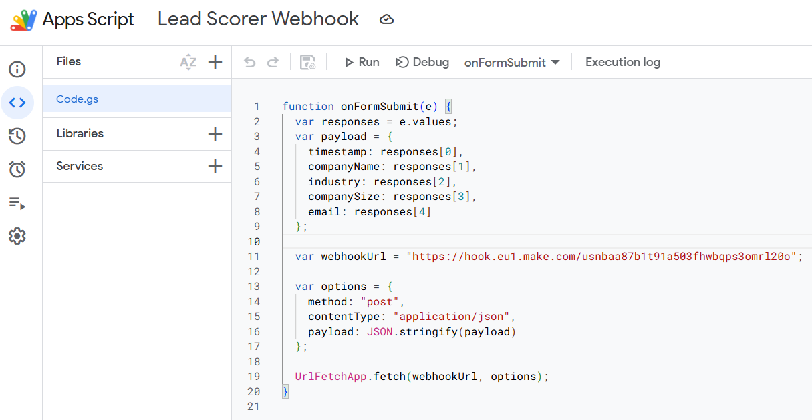
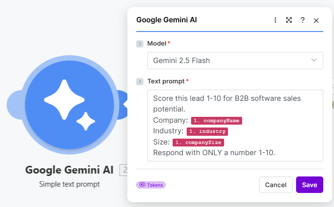
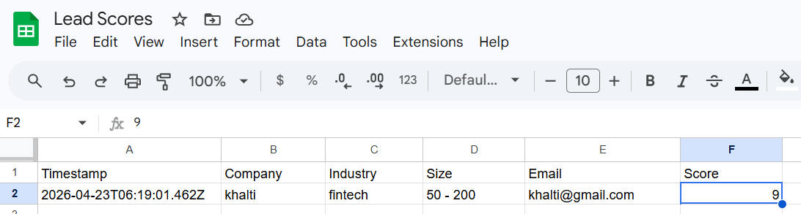
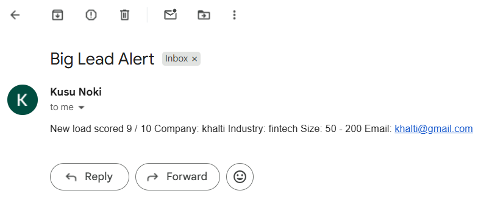
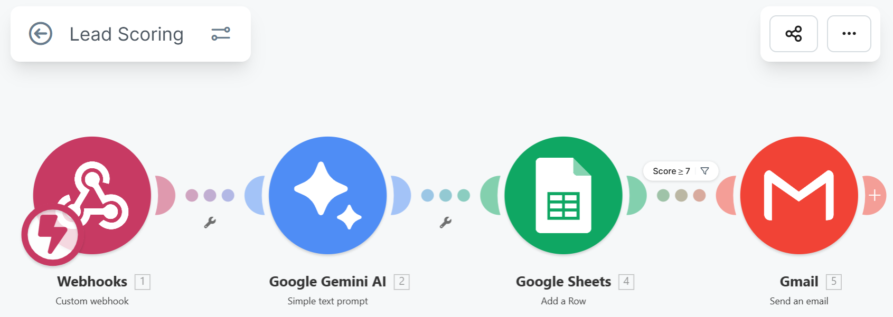

End-to-end lead qualification built on Make.com with the built-in Gemini AI module
For businesses relying on inbound leads, every submission needs rapid qualification. Doing this manually means delays, inconsistency, and missed opportunities. The goal: score every lead automatically within seconds of submission, surface hot prospects immediately, and log everything for tracking.
When someone fills out a lead form, the data flows through a 5-step pipeline automatically. No human touches it until a hot lead hits your inbox.
Step 1 — Capture: A prospect fills out a Google Form with company name, industry, size, and contact email. On form submit, a custom Google Apps Script fires, capturing the response data and POSTing it to a Make.com webhook URL. This decouples the form from Make.com, giving full control over the payload shape and allowing the script to handle retries or pre-processing if needed.

Google Apps Script — onFormSubmit trigger POSTs structured JSON to the Make.com webhook endpoint
Step 2 — Score with AI: Make.com passes the form data to the built-in Gemini module with a strict prompt: "Score this lead 1-10 for B2B software sales potential. Respond with ONLY a number." The model evaluates industry fit, company size, and market relevance in under 3 seconds.

Gemini module in Make.com — prompt engineering for consistent numeric output
Step 3 — Log: The score, timestamp, and all form fields are written to a Google Sheet. This creates an audit trail and lets the team track lead volume over time.

Live Google Sheet — every scored lead logged automatically with timestamp
Step 4 — Alert (Conditional): If the score is 7 or higher, Make.com sends an immediate Gmail alert with the company details. Hot leads never sit in a queue.

Instant email alert — hot lead (8/10) surfaced within 10 seconds of form submission

Complete Make.com scenario — webhook receives data from the Google Apps Script, then routes through scoring, logging, and alerting
This automation solves a real business problem that companies face daily: qualifying inbound leads quickly and consistently. Sales teams waste hours manually reviewing form submissions, and hot prospects often go cold during the delay. By connecting AI scoring to instant alerts, businesses can respond to high-intent leads within seconds. The same pattern transfers directly to CRM integrations, Slack notifications, customer support triage, and multi-client workflow management — making it valuable across industries from SaaS to professional services.